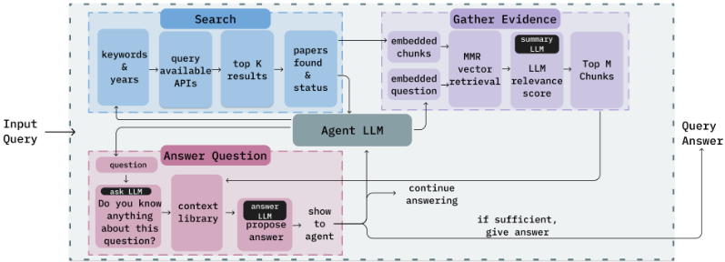
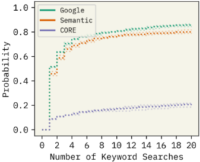
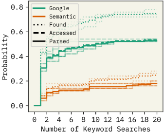

PaperQA：面向科学研究的检索增强生成式 Agent
论文针对 LLM 直接回答科学问题易产生幻觉、且标准 RAG 采用固定线性流程难以应对多样问题的现状，提出 PaperQA——一个将 RAG 拆解为 search、gather evidence、answer question 三个工具、由 Agent LLM 动态编排的文献问答系统，并构建了要求检索 2021 年 9 月后全文文献才能作答的 LitQA 基准。方法上采用 map-reduce 式证据汇总、LLM 对文本块打 1-10 相关性分作为向量检索之外的过滤层，并用 a priori/a posteriori 提示融合模型潜在知识，同时用低成本模型（GPT-3.5）承担高吞吐摘要、GPT-4 负责编排与作答。关键结论：PaperQA 在 PubMedQA blind 上超 GPT-4 30 个百分点（86.3% vs 57.9%），在 LitQA 上超越 Elicit、Scite、Perplexity 等商业工具并与人类专家相当，未发现任何幻觉引用（对比原始 LLM 的 40-60%），单题成本约 $0.18。对团队而言，这是'Agent 化 RAG + 检索型评测'的代表性工程范例，其工具分解、上下文组织与幻觉/校准评测方法可直接借鉴到内部知识库问答与评测保障体系建设中。
LLM 直接回答科学问题存在幻觉且难以验证准确性，依赖预训练知识还无法覆盖训练截止日期后的新文献；标准 RAG 模型遵循固定、线性的流程，无法根据具体问题动态调整检索与汇总步骤；此外现有科学 QA 基准多考察参数化知识或基于给定上下文作答，无法评估系统从全文文献中检索并综合信息的能力。
将 RAG 流程模块化为三个工具（search 检索论文、gather evidence 收集证据、answer question 生成答案），由 GPT-4 Agent LLM 在 LangChain 中动态编排，可多次改写关键词检索、拒绝不完整答案并重试。证据收集采用 map-reduce：对 4,000 字符重叠分块做 text-embedding-ada-002 向量检索与 maximal marginal relevance 多样性排序，由 summary LLM（GPT-3.5）结合问题摘要文本并给出 1-10 相关性分数，top-k 进入 context library；answer 阶段先用 ask LLM 提供 a priori 潜在知识背景，再由 answer LLM 基于证据生成带引用标记的答案，并支持 a posteriori 后验推理。系统共使用四个 LLM 实例（agent/summary/answer/ask），并配套提出基于截止日期后全文文献的 LitQA 评测集。
PubMedQA blind（闭卷、去除提供上下文）上 PaperQA 达 86.3%，超过 GPT-4 的 57.9%，领先 30 个百分点
LitQA 上超越所有受测模型与商业工具（Elicit、Scite、Perplexity），与可上网的人类专家表现相当，且错误作答率最低、更倾向回答 unsure（校准更好）
与人类回答的一致性：human-PaperQA 的 Cramer's V 为 0.67±0.02，与 human-human 的 0.66±0.03 相当（Perplexity 为 0.630±0.05）
引用幻觉：GPT-3.5/GPT-4/Claude-2 的引用幻觉率在 40-60% 之间，而 PaperQA 未发现任何幻觉引用
成本与速度：单题约 $0.18（昂贵 LLM 平均 4,500 tokens + summary LLM 24,000 tokens），50 题约 2.4 小时，折合 $3.75/小时
消融实验：线性流程（Vanilla RAG、No search）性能明显下降，验证 Agent 多次调用工具的优势；去掉 ask LLM 也会降低性能；用 Semantic Scholar 替代 Google Scholar 性能下降
在 MedQA、BioASQ 等标准 QA 基准上 PaperQA 均超过 GPT-4，且在 PubMedQA blind 上达到与使用 ground-truth 上下文的 GPT-4 相当的水平
区别于固定步骤的标准 RAG pipeline，论文将 RAG 拆解为可被 Agent 反复、动态调用的工具，使检索在证据不足时可换关键词多次执行；引入 LLM 相关性打分作为向量检索距离之外的另一层检索过滤；用 a priori/a posteriori 提示融合模型潜在知识；并构建了基于训练截止日期之后全文文献的 LitQA 基准，把评测重点从参数化知识转向检索与综合能力，同时系统化测量了引用幻觉率与不确定性校准，并与人类专家进行成本与一致性对比。
相关度级别：high
命中能力域：3.1 上下文工程与记忆 | 3.2 提示工程 | 3.3 Agent 架构与工具使用 | 3.5 评测与可靠使用
理由：直接命中团队多个核心能力域：3.1（RAG 检索、分块与向量化、context library 的结构化上下文组织与 map-reduce 压缩）、3.3（Agent loop 与工具分解、单 Agent 的执行可靠性与迭代重试机制）、3.2（summary/ask/answer 多角色提示设计与 a priori/a posteriori 提示模式）、3.5（LitQA 评测基准设计、引用幻觉测量、成本分析与不确定性校准）。其'Agent 化 RAG'架构与评测方法论与团队构建知识库问答、文档问答及产出质量保障的工作高度同构，且系统开源、可复现。
建议动作：深入精读并做内部分享
arXiv:2312.07559v2 [cs.CL] 2023年12月14日
Jakub L´ ala Future House
弗朗西斯·克里克研究所 Odhran O'Donoghue Align to Innovate 弗朗西斯·克里克研究所 牛津大学 Aleksandar Shtedritski Align to Innovate 弗朗西斯·克里克研究所 牛津大学
Sam Cox
Future House 罗切斯特大学 Samuel G Rodriques Future House 弗朗西斯·克里克研究所
Future House 罗切斯特大学 andrew@futurehouse.org
2023年12月8日
大语言模型（Large Language Models, LLMs）在各种语言任务上具有良好的泛化能力，但存在幻觉（hallucination）和不可解释性的问题，使得在缺乏真实标准（ground-truth）的情况下难以评估其准确性。检索增强生成（Retrieval-Augmented Generation, RAG）模型被提出用于减少幻觉，并为答案的生成方式提供来源溯源。将此类模型应用于科学文献，有望实现对科学知识的大规模、系统性处理。我们提出了 PaperQA，一个用于回答科学文献相关问题的 RAG 智能体（agent）。PaperQA 是一个能够在全文科学文章中执行信息检索、评估来源与段落的相关性，并利用 RAG 提供答案的智能体。将该智能体视为一个问答模型，我们发现它在现有的科学问答（QA）基准测试（benchmark）上超越了现有 LLM 和 LLM 智能体的性能。为了推动该领域更接近人类对科学文献开展研究的方式，我们还引入了 LitQA，这是一个更为复杂的 benchmark，要求从文献中的全文科学论文里检索并综合信息。最后，我们证明了 PaperQA 在 LitQA 上可与专家级人类研究人员相媲美。
每年发表的论文数量正以指数级速度增长，仅 2022 年就发表了超过 500 万篇学术文章 [1]，文章总量已超过 2 亿篇 [2]。在如此浩瀚的文献中进行导航的困难，意味着许多重要的科学发现在很长一段时间内未受到关注 [3, 4, 5]。过去 10 年的工作一直致力于让科学家更易于驾驭这片文献空间，包括引入关键词搜索系统 [6, 7]、向量相似度嵌入 [8, 9, 10, 11] 以及推荐系统 [12, 13]。然而，从文献中进行科学发现的过程仍然高度依赖人工。
1
使用大语言模型（Large Language Models, LLMs）回答科学问题的做法在学术界以及医学等研究密集型行业中日益常见 [14, 15]。虽然 LLMs 能够比人工检索更快地给出答案，并且涵盖的范围更广、更深，但其回答中存在很高的幻觉风险，可能导致潜在的危险后果 [16, 17]。错误信息可能比完全没有信息更具危害性，因为验证信息真实性所需的时间，可能与最初从研究论文中检索该信息所需的时间一样长 [18]。对预训练 LLMs 的依赖也使得无法发现在训练截止日期之后发布的新信息。鉴于科学快速发展的步伐，这可能导致错误观念长期存在。
检索增强生成（Retrieval-Augmented Generation, RAG）模型是解决上述局限的一种潜在方案 [19]。RAG 模型从语料库中检索文本，采用向量嵌入搜索或关键词搜索等方法，并将检索到的段落加入 LLM 的上下文窗口中。使用 RAG 可以减少对话中的幻觉，并提升 LLM 在问答（QA）任务上的性能 [16, 20]。然而，标准 RAG 模型遵循固定的线性流程，这在应对科学家所遇到的各类问题时可能显得局限。
在本工作中，我们通过将 RAG 拆分为模块化的组件来消除这些局限，使 LLM 智能体能够根据每个问题的具体需求动态调整并迭代执行各个步骤，从而确保答案更加精确且更具相关性。我们将其称为 PaperQA，一个基于智能体的科学问答 RAG 系统。PaperQA 包含三个基本组件：查找与给定问题相关的论文、从这些论文中收集文本，以及生成带有参考文献的答案。
我们在多个用于评估 LLM 的标准多项选择数据集上对 PaperQA 进行了评估，这些数据集衡量的是模型利用已有知识回答问题的能力，但并不测试智能体检索信息的能力。我们对 PubMedQA [21] 进行了修改，去除了所提供的上下文（使其成为闭卷，closed-book），发现 PaperQA 比 GPT-4 高出 30 个百分点（57.9% 对 86.3%）。不过，PubMedQA 仅基于摘要构建，因此我们构建了一个更为困难的数据集，该数据集需要从一篇或多篇全文研究论文中综合信息。为此，我们引入了一个由近期文献构成的新数据集 LitQA，以测试 PaperQA 在底层 LLM 预训练数据之外检索信息的能力。PaperQA 的表现优于所有受测模型和商业工具，在 LitQA 上的性能和耗时与人类专家相当，但成本显著更低。此外，PaperQA 在科学问答方面与最先进的商业工具相比也具有竞争力。最后，我们发现 PaperQA 展现出比竞争工具更好的知识边界，其错误回答问题的比率更低，而是回答自己不确定。
LLMs for Natural Sciences Large Language Models (LLMs) have seen a surge in popularity and accessibility, leading to impressive applications across various domains [22, 23, 24, 25, 26, 27]. LLMs have been used effectively for text-based scientific tasks, such as extracting chemical reaction procedures [28] and entity extraction from biological documents [29]. LLMs trained on biomedical [30, 31, 32, 33, 34] or more generalized scientific literature [9, 35] have demonstrated impressive performance on current scientific QA benchmarks.
State-of-the-art pre-trained LLMs exhibit proficiency in complex tasks such as searching for chemical compounds [27] and designing new catalysts [36]. Still, LLMs frequently fall short in many scientific domains due to outdated knowledge [37] and reasoning problems [38, 39]. Prompt engineering techniques can enhance LLMs' reasoning abilities [40, 41], though some scientific tasks requiring real-time calculations and up-to-date information remain difficult.
Agents Another technique is to integrate external tools into LLMs, creating agent systems, such as MRKL [42]. These LLM-agent systems leverage the reasoning power of the base-LLM and the use of pre-defined external tools to act in order to complete a given prompt [43, 44]. In such a system, the agent iteratively decides on the best tools to use in order to address the given task, correcting previous behavior when necessary, until the task is complete. This setup can also integrate reasoning steps, as with the ReAct framework and its derivatives [45, 46], or may incorporate multi-agent systems [47, 48, 49]. Our method extends previous work by integrating an agent-based RAG framework in order to correctly and dependably answer scientific questions.

Evaluating LLM Scientists Assessing the scientific capabilities of LLMs often relies on QA benchmarks, such as general science benchmarks [50, 51], or those specializing in medicine [21], biomedical science [52] or chemistry [53, 54]. In contrast, open-ended tasks, such as conducting chemical synthesis planning [55] or offering healthcare support [56], necessitate manual evaluation to effectively measure an LLM's capabilities. We discuss the limitation of these datasets and introduce a new QA dataset for retrieval-based science.
检索增强 LLM 与检索系统相集成的大型语言模型（LLM）被广泛称为检索增强生成（RAG）模型 [19]，其关键组件包括文档数据库、用于检索文档的查询系统，以及将检索到的文档加入模型上下文的流水线。RAG 模型已被证明在生物医学和临床问答（QA）任务中有效 [57, 16]。尽管 RAG 系统通常是步骤数量和顺序均固定的流水线，但它们也可以由多跳搜索（multi-hop search）构成 [58]，或使用 Agent [49]，即由 LLM 决定何时使用检索来增强答案 [43]。RAG 的性能还可以通过先验提示（a priori prompting）进一步提升，即提示 LLM 考虑使用潜在信息而非进行搜索；或通过后验提示（a posteriori prompting），即要求 LLM 评估检索结果的准确性并可能给出替代答案 [59]。若句子中包含低概率 token，Active RAG [60] 会利用检索重新生成这些句子。
检索方法 连接到数据库的 RAG 模型使用固定表示来检索文档，例如词袋（Bag-of-Words）或 BM25 [61, 62]、预训练嵌入 [63, 61]，或可训练编码器 [19, 64]，这些编码器可离线训练 [64] 或在线训练 [65]。对于使用互联网等开放式来源的模型，则采用短语搜索或关键词搜索进行检索 [66, 49]。检索到的文档通常作为输入 token 传递给模型，但也有一些模型使用交叉注意力（cross-attention）对检索到的信息进行单独处理 [67, 62]。学习对检索到的文档进行排序与过滤 [68] 可进一步提升 RAG 模型的性能。在本工作中，我们评估了采用关键词搜索系统和向量嵌入检索的检索增强模型。特别地，我们着重于与人类进行基准测试（benchmark）对比，并揭示 LLM 在何种条件下能够在信息检索方面达到人类的水平。
3
PaperQA 系统是一个如图 1 所示的智能体（Agent）。PaperQA 的基本操作是：从 Arxiv 1 和 Pubmed 2 等在线数据库中查找相关论文；从这些论文中收集文本；并将信息综合成最终答案。PaperQA 的工具由外部 API 和 LLM 共同构成，下文将详细描述。与标准 RAG 相比，我们做出了四项关键创新。首先，我们将 RAG 的部分组件分解出来，并将其作为工具提供给 Agent。这样，在所收集的证据不充分时，某些操作（例如搜索）便可以使用不同的关键词多次执行。其次，我们采用 map 汇总步骤从多个来源收集证据，随后通过 reduce 步骤生成答案。map-reduce 步骤扩大了可纳入考虑的来源数量，并提供了一个草稿板（scratchpad）[40]，使 LLM 能够在形成最终答案之前给出中间证据。第三，我们利用 LLM 对文本进行推理的能力，针对查询问题为每个文本块（chunk）给出数值化的相关性评分。除了常用的向量嵌入距离之外，我们还使用这些由 LLM 生成的相关性评分，从而增加了一层检索。最后，我们利用先验（a priori）提示与后验（a posteriori）提示，挖掘 LLM 中的潜在知识。
PaperQA 具有三个工具：search（用于查找相关论文）、gather evidence（将与查询最相关的论文文本块收集到上下文库中）以及 answer question（基于累积的上下文提出答案）。这些工具利用了三个独立的 LLM 实例，即 summary LLM、ask LLM 和 answer LLM，它们最终以字符串作为输入并输出一个状态字符串，同时累积证据以回答问题。系统提示与各工具的描述分别见附录 A.2 和 A.3。Agent LLM 使用以下提示进行初始化：
回答问题：question。搜索论文、收集证据并作答。如果你没有足够的证据，可以搜索更多论文（优先），或者用不同的措辞收集更多证据。你可以在这些步骤中改写或拆分问题。一旦你从多个来源获得了五条或更多证据，或者已经尝试了很多次，就调用 answer_question 工具。如果答案不完整，你可以拒绝该答案并再次尝试。
search：Agent 向该工具提供关键词以及（可选的）年份范围。该工具会查询科学文献搜索引擎。检索到的论文会被添加到本地文献库中，供 gather evidence 使用。添加方式是：创建相互重叠的 4,000 字符文本块，使用 text-embedding-ada-002 模型 [69] 对其进行嵌入，并插入向量数据库 [70] 中。搜索引擎的性能、论文的获取以及 PDF 的解析都存在一定的失败率。我们在附录 C 中对此进行了探讨。在初始化 Agent 之前，该工具总会以完整的问题文本执行一次。
gather evidence：Agent 将一个问题作为输入提供给该工具。该问题使用 OpenAI 的 text-embedding-ada-002 [69] 进行向量嵌入，然后从 search 工具所创建的向量数据库中返回基于向量搜索的相关文本块。文本块通过最大边际相关性（maximal marginal relevance）搜索 [71] 进行检索，以增加返回文本的多样性。每个检索到的文本块都会连同以下提示一起输入 summary LLM：
1 https://arxiv.org/
2 https://pubmed.ncbi.nlm.nih.gov/
总结下面的文本以帮助回答问题。不要直接回答问题，而是通过总结提供有助于回答问题的证据。如果文本不相关，请回复 'Not applicable'。使用 summary_length。在回复的末尾，另起一行给出一个 1-10 的分数，以表示与问题的相关性。不要解释你的分数。chunk 引文摘录 问题：question 相关信息 摘要：
随后，返回的文本块会按分数排序，top-k 文本块被收集到上下文库中。该工具将 top-1 文本块返回给 Agent，以便 Agent 能够对得分最高的文本块作出响应。
gather evidence 工具是检索增强生成（RAG）系统中始终存在的一个 map 步骤。它提供了拒绝无关上下文的机会，并且可以并发执行以最小化计算时间。它对于 PDF 解析错误尤其有帮助：借助这一步骤，可以对乱码文本进行总结，并由问题提供上下文来引导总结，从而缓解此类错误。
answer question 我们首先使用 ask LLM 来提供预训练 LLM 中任何可能有助于回答原始问题的有用信息（细节见附录 A.4），这与 [59] 中探讨的先验判断（a priori judgement）类似。ask LLM 的输出会被加入到来自上下文库（context library）的文本块中，发送给 answer LLM 的最终提示如下：
请根据所提供的上下文（context）为下面的问题撰写一个答案（answer_length）。如果上下文提供的信息不充分，请回复 "I cannot answer"。对于答案的每一部分，请在句子末尾使用有效的引用标记标明最支持该部分的来源，例如 (Example2012)。请以不带偏见、全面且学术化的语气作答。如果问题是主观性的，请在结尾的 1-2 句中给出带有明确观点的答案。context 额外背景信息：ask LLM 问题：question 答案：
该提示中的 question 是输入给更高层级 PaperQA Agent 的原始问题，而 context 则来自上下文库中相关文本块的集合。该工具返回的响应会被送回 Agent，Agent 可依据上文给出的 Agent 初始化提示（initialisation prompt）中的规定，接受或拒绝该答案。
现有的科学问答基准测试（benchmark）评估的是 AI 系统呈现广为人知或广泛可得信息的能力，或在给定特定上下文的情况下回答问题的能力。因此，这些基准测试不足以评估 Agent 基于检索到的信息回答问题的能力。为此，我们引入了用于 PaperQA 评估的 LitQA 数据集。LitQA 中的问题来源于近期文献（2021 年 9 月之后），因此我们预计这些问题不会被纳入大多数语言模型的训练数据中，并且这些问题被设计为在不检索相关论文的情况下难以回答甚至无法回答。因此，LitQA 同时评估了检索必要信息的能力，以及基于该信息给出准确答案的能力。
数据集描述 LitQA 数据集由专家编制的 50 道多项选择题组成。所有问题均来自生物医学领域。其中有 5 道是/否（Yes/No）题，6 道含 3 个可选答案的题，23 道含 4 个可选答案的题，10 道含 5 个可选答案的题，4 道含 6 个可选答案的题，最后还有 2 道含 7 个可选答案的题。我们在表 1 中展示了这些问题示例。
数据收集 所有问题均由自然科学与生物医学领域的研究人员撰写并审阅。问题的编制方式是：首先选取一篇发表于 2021 年 9 月
5
| ID | Question | Answers | Difficulty |
|---|---|---|---|
| 7 | Has anyone performed a base editing screen against splice sites in CD33 before? | Yes No | Easy |
| 32 | How diffuse are the laminar patterns of the axonal terminations of lower Layer 5/Layer 6 intratelencephalic neurons compared to Layer 2-4 intratelencephalic neurons in mouse cortex? | More diffuse About the same Less diffuse | Medium |
| 21 | Which of these glycoRNAs does NOT show an increase in M0 macrophages upon stimulation with LPS: U1, U35a, Y5 or U8? | U8 U1 U35a Y5 | Hard |
| ID | Question | Answers | Difficulty |
截止日期之后的论文，然后从该论文中设计出一个问题，该问题既涉及论文中的一项新发现，又未在论文摘要中呈现。我们预计这些发现不会在其他论文中被呈现，也不会在截止日期之前的资料来源中可获得。对于每个问题，还创建了干扰答案（distractor answers），其或由出题者单独完成，或通过使用 LLM 为给定问题提供一个看似合理的答案。我们特别注意仅从发表于 2021 年 9 月这一 GPT-3.5/4 截止日期之后的论文中收集问题。这确保了这些问题无法利用 GPT-4 的潜在知识被可靠地回答。随后，每个问题都由至少一位其他合著者独立审阅。
人类表现 我们招募了五名具有本科及以上学历的生物医学研究人员来解答 LitQA。他们可以使用互联网，每道题有三分钟作答时间（总计 2.5 小时）来回答所有问题，并需注明其用于选择相应答案的论文。此外，他们被要求在无法找到某个问题的答案时回答 unsure（不确定）。
在本节中，我们测量了 PaperQA 在 LitQA 及其他数据集上的性能，并与现有商业产品进行比较。我们在 LitQA 数据集上对 PaperQA 的所有组件进行了消融实验，以展示其重要性。最后，我们研究了检索相关论文的能力以及幻觉的发生率。
所有实验均在 LangChain 的智能体框架 [72] 中实现。如上所述，除非另有说明，我们使用四个不同的大语言模型（LLM）实例，其设置如下：agent LLM：GPT-4 OpenAIFunctions Agent，温度 τ agent = 0.5；summary LLM：GPT3.5，温度始终为 τ sum = 0.2；answer LLM：GPT-4，温度 τ ans = 0.5；ask LLM：GPT-4，温度 τ ask = 0.5。对于搜索引擎，我们使用 Google Scholar，并从中收集可访问的前 5 篇论文。实现细节在附录的一个实验中进行了说明。我们通过公开可用的 API 访问论文，例如 Arxiv、PMC、OpenAccess、PubMed 以及我们自己的本地论文数据库。最后，我们将每轮 gather evidence 中考虑的来源数量设为 20，并将 answer question 中最终答案所包含的证据上下文数量设为 8。
Here we thoroughly evaluate PaperQA. We compare it against commercially available tools and human performance on LitQA. Next, we ablate the components of PaperQA and look into hallucinated citations. Finally, we evaluate PaperQA on several standard QA benchmarks.
Scientific Question Answering First, we compare PaperQA on LitQA with two pre-trained LLMs, AutoGPT and several commercially available tools for scientific research - Elicit, Scite and Perplexity - in Table 2. All commercial tools are specifically tailored to answering questions by retrieving scientific literature. We give them the same prompt as to PaperQA. From Table 2 we see that PaperQA outperforms all competing models and products, and is on par with that of human experts with access to the internet. Furthermore, we see the lowest rate of incorrectly answered questions out of all tools, which rivals that of humans. This emphasizes that PaperQA is better calibrated to express uncertainty when it actually is uncertain. Surprisingly, GPT-4 and Claude-2 perform better than random although the questions are from papers after their training cut-off date, suggesting they have latent knowledge, leading to useful bias towards answers that are more plausible.
6
| Model.Model | Samples.Samples | Response.Correct | Response.Incorrect | Response.Unsure | Score.Accuracy ( Correct All ) | Score.Precision ( Correct Sure ) |
|---|---|---|---|---|---|---|
| Random | 100 | 10.2 | 29.5 | 10.3 | 20.4% | 25.7% |
| Human | 5 | 33.4 | 4.6 | 12 | 66.8% | 87.9 % |
| Claude-2 | 3 | 20.3 | 26.3 | 3.3 | 40.6% | 43.6% |
| GPT-4 | 3 | 16.7 | 16.3 | 17 | 33.4% | 50.6% |
| AutoGPT | 3 | 20.7 | 7.3 | 22 | 41.4% | 73.9% |
| Elicit | 1 | 12 | 16 | 22 | 24.0% | 42.9% |
| Scite | 1 | 12 | 21 | 17 | 24.0% | 36.4% |
| Perplexity | 1 | 9 | 10 | 31 | 18.0% | 47.4% |
| Perplexity (Co-pilot) | 1 | 29 | 10 | 12 | 58.0% | 74.4% |
| PaperQA | 4 | 34.8 | 4.8 | 10.5 | 69.5% | 87.9% |
| Model.Model | Samples.Samples | Response.Correct | Response.Incorrect | Response.Unsure | Score.Accuracy ( Correct All ) | Score.Precision ( Correct Sure ) |
PaperQA averaged 4,500 tokens (prompt + completion) for the more expensive LLMs ( agent LLM , answer LLM , ask LLM ) and 24,000 tokens for the cheaper, high-throughput LLM ( summary LLM ). Based on commercial pricing as of September 2023, that gives a cost per question of $0.18 using the stated GPT-4 and GPT-3.5-turbo models. It took PaperQA on average about 2.4 hours to answer all questions, which is also on par with humans who were given 2.5 hours. A single instance of PaperQA would thus cost $3.75 per hour, which is a fraction of an average hourly wage of a desk researcher. We exclude other negligible operating costs, such as search engine APIs, or electricity.
How does PaperQA compare to expert humans? PaperQA shows similar results to those of the expert humans who answered the questions. To quantify this, we calculate the categorical correlation (Cramer's V ) of the responses for each human-human and human-PaperQA pair. Average human-human V is 0 . 66 ± 0 . 03 , whereas average human-PaperQA V is 0 . 67 ± 0 . 02 (mean ± stderr), indicating that PaperQA is, on average, as correlated with human respondents as the human respondents are with each other, implying no discernable difference in responses. To compare, the average V between humans and Perplexity was 0 . 630 ± 0 . 05 .
PaperQA 消融实验 我们在表 3 中报告了切换 PaperQA 的不同组件和 LLM 后在 LitQA 上的性能表现。使用 GPT-4 作为答案 LLM 的效果略优于 Claude-2。在考察 PaperQA 的各个组件时，我们观察到，当不将多选题选项作为答案（no MC options）以及用 Semantic Scholar 替代 Google Scholar 时，性能出现大幅下降。对于前者，我们的解释是：封闭式问题比开放式问题更容易，并且模型可以利用从可能的答案中提取的关键词进行搜索。线性设置 Vanilla RAG 和 No search 的性能下降，显示了基于 Agent 的模型的优势：这类模型可以多次调用工具，直到对最终答案感到满意为止。令人惊讶的是，不使用 LLM 的潜在知识（no ask LLM）同样会损害性能，尽管该基准测试（benchmark）基于截止日期之后的信息——我们推测，我们在表 5 中发现 LLM 所具备的有用潜在知识，有助于 Agent 选用最佳的证据片段。
7
| Model.Answer | Model.Summary | Correct.Correct | Incorrect.Incorrect | Unsure.Unsure | Ablation.PaperQA | Correct.33.5 | Incorrect.5.0 | Unsure.11.5 |
|---|---|---|---|---|---|---|---|---|
| Claude-2 | GPT-3.5 | 32.5 | 7 | 10.5 | No summary LLM | 29 | 10 | 11 |
| Claude-2 | GPT-4 | 26.5 | 9 | 14.5 | Single citation | 27 | 10 | 13 |
| GPT-4 | GPT-3.5 | 5 | 11.5 | No ask LLM | 23 | 14 | 13 | |
| 33.5 | No search | 23 | 7 | 20 | ||||
| GPT-4 | GPT-4 | 31.5 | 7 | 11.5 | Vanilla RAG | 22 | 6 | 22 |
| Semantic Scholar | 21 | 4 | 25 | |||||
| No MCoptions | 18 | 6 | 26 |
| Model.Answer | Model.Summary | Correct.Correct | Incorrect.Incorrect | Unsure.Unsure | Ablation.PaperQA | Correct.33.5 | Incorrect.5.0 | Unsure.11.5 |
| LLM.LLM | Valid (%).Valid (%) | Hallucinated (%).Full Hallucination | Hallucinated (%).Citation Inaccuracy | Hallucinated (%).Context Irrelevance | N.N |
|---|---|---|---|---|---|
| GPT-3.5 | 52.50% | 33.75% | 12.50% | 1.25% | 80 |
| GPT-4 | 60.78% | 29.41% | 3.92% | 5.88% | 51 |
| Claude-2 | 39.71% | 42.65% | 4.41% | 13.24% | 68 |
| PaperQA | 100% | 0% | 0% | 0% ∗ | 237 |
| LLM.LLM | Valid (%).Valid (%) | Hallucinated (%).Full Hallucination | Hallucinated (%).Citation Inaccuracy | Hallucinated (%).Context Irrelevance | N.N |
最后，由于 LitQA 的检索优先特性——原始论文中仅有一个文本块（chunk）包含答案——single citation 和 no summary 这两种 LLM 设置的表现与标准 PaperQA 相当。
PaperQA 会产生引用幻觉吗？我们使用来自 LitQA 早期版本 3 的 52 个问题，评估了 GPT-3.5、GPT4 和 Claude-2 的引用幻觉情况，其中我们要求 LLM 以长文形式回答问题并提供引用。我们对这些引用进行了人工评估，以核实论文是否存在、引用细节的准确性，以及被引论文与所给答案的相关性。评分基于引用总数 N，而非答案数量。我们在表 4 中展示了幻觉结果。幻觉引用被归类为完全幻觉（full hallucination）、引用不准确（citation inaccuracy）或上下文不相关（context irrelevance，即被引论文确实存在，但与问题无关）。我们进行了多次测试，但通过 PaperQA 均未产生幻觉引用。据我们的非正式观察，我们曾观察到 PaperQA 引用了一手来源中提及的二手来源，由于它无法访问该二手来源，这可能导致幻觉。
问答基准测试上的评估 我们在常用于评估大语言模型（LLM）的标准问答（QA）多项选择数据集上对 PaperQA 进行评估。这些基准测试（benchmark）考查的是广为人知的事实，而这类事实通常不是出现在学术论文中，而是出现在教科书中。在此，我们测量依赖论文信息的 PaperQA 在此类问题上的表现如何。对于所有数据集，我们均在随机抽取的 100 个问题上进行评估（详见附录 E）。我们在以下数据集上进行评估：PubMedQA [21] 由可依据所提供上下文回答的 yes/no/maybe 问题组成。为模拟 LitQA 的设置，我们不向模型提供该上下文。我们将其称为 PubMedQ blind，以区别于 PubMedQA。此外，我们略去了真值（ground-truth）答案为 'maybe' 的问题，因为自该数据集于 2019 年发布以来，此类问题可能已演变为确定的 'yes' 或 'no' 答案。MedQA [73] 由基于美国医师执照考试（United States Medical License Exams, USMLE）的多项选择题组成，并涵盖多种语言。我们使用其中的英文题目。BioASQ [74] 是一个生物医学问答数据集。我们仅使用其中的 yes/no 问题。
3 最终修订后的数据集问题数量有所减少，因为其中一些问题存在多个潜在答案，因此此处所使用的问题存在少量差异。
| Method | MedQA-USMLE | BioASQ | PubMedQA blind |
|---|---|---|---|
| GPT-4 | 67 | 84 | 57.9 |
| GPT-4 + PaperQA | 63 | 87 | 86.3 |
| AutoGPT | 54 | 73 | 56.8 |
| AutoGPT + Post reasoning | 56 | 75 | 61.3 |
| PaperQA | 68 | 89 | 86.3 |
| PaperQA + Post reasoning | 69 | 91 | 85 |
| Method | MedQA-USMLE | BioASQ | PubMedQA blind |
在表 5 中，我们将 PaperQA 与 GPT-4 和 AuoGPT 进行比较（我们不测量商业可用工具的性能，因为它们没有 API 且需要人工评估）。对于所有基准测试和方法，我们均采用零样本推理（zero-shot inference）。虽然 AutoGPT 的表现不及 GPT-4，但 PaperQA 在所有数据集上都优于 GPT-4。我们看到，性能差距最大、且为 GPT-4 配备 PaperQA 搜索后提升最大的，是在 PubMedQA blind 上。在附录 F 中，我们发现 PaperQA 与使用真值上下文（ground-truth context）的 GPT-4 性能相当，而该上下文在设计上便包含正确答案，这表明 PaperQA 能够检索到与真值上下文同等水平的上下文信息。我们看到 PaperQA 与 GPT-4 在 MedQA 上的差距较小，我们将此解释为：MedQA 基于医学考试，所需的是教科书中的知识，而非学术论文中的知识。最后，我们观察到，在使用 PaperQA 时，GPT-4 平均而言在后验推理（posteriori reasoning）下表现更好。
PaperQA 利用了底层研究论文中的事实、过程和概念，并将这些信息转化为人类和机器均可解释的上下文。我们由此隐含地假设底层论文中的信息是正确的，但这一假设可能并不成立。尽管我们向模型提供了一些“信号”，例如期刊名称和引用次数，但这些并不是能够忠实反映质量的指标。
我们的模型和基准测试（benchmark）受到科学本质不断变化以及科学文献可获得性的影响：LitQA 中的部分问题可能会随时间推移出现新的正确答案，或变得不再有效。因此，使用该 benchmark 的用户应将用于回答问题的论文限定为截止于 2023 年 9 月 15 日。
尽管近期已有针对提示优化（prompt optimization）的研究工作 [75, 76]，但多个智能体各自拥有独立提示的复杂场景仍未得到解决。具体而言，该任务变成了一个非平凡的双层优化问题。因此，辨别手动调整提示所产生的影响变得困难。因而，我们的提示不太可能是最优的，并且难以评估提示中的哪些部分是必要的。
我们提出了 PaperQA，一个检索增强生成（RAG）智能体，它能够比其他大语言模型（LLM）和商业产品更好地回答科学问题。我们发现 PaperQA 比人类更具成本效益，同时其准确率仍与人类研究人员相当。我们测得近期 LLM 的引用幻觉率介于 40-60% 之间，而在 PaperQA 的回答中我们未能找到哪怕一个幻觉引用。我们还提出了 LitQA——一个由 50 个问题组成的基准测试（benchmark），这些问题需要从全文科学论文中检索信息。PaperQA 系统独立于底层模型工作，Claude-2、GPT-3.5 和 GPT-4 的各种组合在 LitQA 上均能取得出色的结果。PaperQA 最重要的特性在于它能够动态使用 RAG 工具、检索全文论文，并通过智能体的决策对答案进行迭代。我们希望这一科学问答系统的开源实现能够为未来减少 LLM 幻觉的 RAG 智能体和工具的设计提供启示。随着这些进步，我们相信科学研究将以成本的一小部分和数倍的速度开展，从而推动自然科学领域更快的创新。通过用文献综述工具增强研究人员的能力，我们旨在最大限度地减少检索文献所花费的时间，转而最大限度地增加用于对科学研究进行深度思考的高效工作时间。
关于所面临的固有局限与挑战，以及为保持模型的鲁棒性与可靠性而采取的缓解措施的讨论，见第 6 节。为了全面理解并复现我们的方法，我们建议仔细审阅上述章节，并结合所提供的补充材料。
随着更强大模型的开发，双重用途（dual-use，即将技术同时用于有益和有害的目的）是一个持续存在的担忧 Urbina 等人 [77]。我们执行了严格的红队测试（red-teaming）问题，与直接使用用于摘要生成的语言模型相比，未观察到显著升高的伤害风险。同样，LitQA 数据集及其回答不构成任何伤害风险。
所使用的底层模型版本为 GPT-3.5-turbo-0613 和 GPT-4-0613。我们使用了 LangChain v0.0.303 和 OpenAI-python v0.28.1。
LLM（ask LLM、summary LLM 和 answer LLM）所使用的系统提示词（system prompt）如下：
请以直接、简洁的语气作答，我很赶时间。你的读者是专家，因此请给出高度具体的内容。如果存在含义模糊的术语或缩写，请先给出其定义。
agent 的系统提示词为
你是一个乐于助人的 AI 助手。
search 工具描述：
搜索论文以增加论文数量。输入应为关键词组成的字符串。请使用以下格式：[keyword search], [start year]-[end year]。你可以将年份作为查询的最后一个词，例如 'machine learning 2020' 或 'machine learning 2010-2020'。当前年份为 get_year()。
gather evidence 工具描述：
给出一个具体的问题，以便为其获取证据。此操作将增加证据数量和相关论文数量。
generate answer 工具描述：
让模型利用来自论文的证据提出答案。输入为待回答的问题。该工具可能会失败，这表明应当寻找更好或不同的证据。
为了捕捉大语言模型（LLM）中的潜在知识，我们使用以下提示词：
我们正在为下面的问题/任务收集背景信息。请简要总结你所知道的、可能有助于回答该问题的信息（约50词）——不要直接回答该问题，并忽略格式指令。如果没有可贡献的内容，也可以不回答。
问题：question
16
我们使用了 LangChain experimental 0.0.8 版本中的 AutoGPT 实现。由于 AutoGPT 可以无限期运行，我们在 10 次搜索后添加了一个停止条件。对于 LitQA，要求它基于所有先前信息回答问题；对于其他数据集，我们重新启动它并确保它选择其中一个选项，从而使所有问题都能得到答案。所使用的 Agent LLM 为 GPT-4-0314。它可以访问 3 个工具：Google 搜索、写入文件和读取文件。
作为 PaperQA 开发工作的一部分，我们评估了使用不同搜索 API 引擎进行论文检索的效果。为此，我们创建了一个由 500 个问题组成的新指标。其目标是构造出很可能只有少量论文才包含答案的问题。具体方法如下：
问题生成采用 5-shot 提示技术，系统提示词为：
你是一个乐于助人的助手，帮助完成以下任务。目标是创建一个能够由带有这些摘要的论文回答的问题。请发挥创造力，设想一个科学家在不知道自己要找的论文的情况下会提出的问题。
下面是这样一个由“摘要-问题”对拼接而成的示例（红色部分为 LLM 的补全内容）：
标题：DeepDTA: deep drug-target binding affinity prediction 摘要：动机：识别新型药物-靶点（DT）相互作用是药物发现过程的重要组成部分。[...] 本工作采用的一种新方法是使用卷积神经网络（CNN）对蛋白质序列和化合物的 1D 表示进行建模。结果：结果表明，所提出的基于深度学习、使用靶点和药物 1D 表示的模型是预测药物-靶点结合亲和力的有效方法。[...] 问题：是否有任何模型使用靶点和药物的 1D 表示来进行药物-靶点结合亲和力预测？
随后使用该数据集，通过 20 个关键词来搜索前 10 篇论文，这些关键词是使用以下提示词生成的：
我们想要回答以下问题：question 请提供 num_keywords 个互不重复的关键词搜索（每行一个搜索）以及能够找到有助于回答该问题的论文的年份范围。不要使用布尔运算符。确保不要在不更改关键词或年份范围的情况下重复搜索。让一些搜索范围宽泛一些，一些搜索范围具体一些。当前年份是 get_year()。请使用以下格式：'X. [keywords], [start year]-[end year]' 例如，一个包含 3 个关键词的列表将被格式化为：1. 'keyword1, keyword2, 2020-2021 2. 'keyword3, keyword4, keyword5, 2020-2021 3. 'keyword1, keyword2, 2020-2021'
17
因此，我们评估的是召回率（recall），即能否找到原始论文。图 2 展示了累积召回率曲线，其中 Google Scholar 和 Semantic Scholar 在检索原始论文方面表现出卓越的能力。尽管 CORE API [78] 的表现不及前两者，我们仍将其纳入其中，因为它们对科学文献领域的主要贡献在于对开放获取论文存储库的标准化。

由于附录 C.1 中的摘要检索不足以覆盖 PaperQA 的所有使用场景，我们还使用 LitQA 的早期版本来评估我们的检索流水线，但这次考虑的是从文章正文而非摘要中合成的问题。此外，我们还检验了该流水线查找、访问并解析这些问题所对应原始论文的能力。

| Search | LLM | AUC of Figure 3.Found | AUC of Figure 3.Accessed | AUC of Figure 3.Parsed |
|---|---|---|---|---|
| Semantic | Claude-2 GPT-4 | 0.12 0.19 | 0.07 0.14 | 0.07 0.14 |
| Claude-2 | 0.57 0.66 | 0.47 | ||
| GPT-4 | 0.28 0.47 | 0.28 |
| Search | LLM | AUC of Figure 3.Found | AUC of Figure 3.Accessed | AUC of Figure 3.Parsed |
图 3 和表 7 显示了 Google Scholar 相较于 Semantic Scholar 的卓越性能。我们认为这归功于 Google Scholar 能够对文章正文进行检索，而 Semantic Scholar 仅限于标题、作者和摘要。实际上，我们几乎能够解析所有有权访问的论文。请注意 GPT-4 的性能略好，这可能是由于它更好地遵循了提示（prompt）中的指令。我们预计，通过一些提示优化，两个大语言模型（LLM）的性能可能会更加接近。最后，需要指出的是，自运行该评估以来，我们已经通过 Google Scholar 的开放获取链接改进了对论文的访问，因此解析论文的最终性能很可能会更好。
| Search | LLM | Found |
|---|---|---|
| CORE | Claude-2 GPT-4 | 0.13 0.13 |
| Semantic | Claude-2 GPT-4 | 0.64 0.72 |
| Claude-2 GPT-4 | 0.68 0.76 |
| Search | LLM | Found |
18
为了评估幻觉，我们向每个模型给出了以下提示（prompt）：
回答下面的问题，并引用有助于回答该问题的一手来源。使用以下格式引用来源 - (Foo et al., 2010) - 注意整个引用始终位于括号内。
对于每个数据集，我们提供了问题编号（question ids），以及提示中给出的格式化问题和选项列表。请参阅补充材料（Supplementary Material）。
为了评估所发现证据的质量，我们将 PaperQA 发现的证据与 PubMedQA 中提供的真实证据（ground-truth evidence）进行比较，后者在设计上足以正确回答问题。在表 8 中，我们展示了 PaperQA 发现的证据与真实上下文（ground-truth context）相比具有竞争力。此外，PaperQA 还能找到与真实上下文中所提供信息互补的信息，当两者同时提供时，可进一步提升结果。
| Context.Ground Truth | Context.PaperQA | PubMedQA.PubMedQA |
|---|---|---|
| ✗ | ✗ | 57.9 |
| ✓ | ✗ | 85.2 |
| ✗ | ✓ | 86.3 |
| ✓ | ✓ | 90.1 |
| Context.Ground Truth | Context.PaperQA | PubMedQA.PubMedQA |
表 8：PaperQA 所发现上下文的质量。我们将提供 PubMedQA 中的真实上下文与 PaperQA 生成的答案进行比较。
为了检验在所收集的上下文中纳入参数化知识是否有用，我们向 PaperQA 提供如下提示：
请根据所提供的上下文，为下面的问题撰写一个答案（约 200 词，如有必要可以更长）。如果上下文提供的信息不充分、问题无法直接回答，请回复“我无法回答”。对于你答案中的每个部分，请在句子末尾使用有效的引用标记（例如 (Example2012)）来标明哪些来源最支持该部分。
提示之后依次附上预先收集的、带有相关性得分的上下文、一些额外的背景信息以及该问题。这些额外的背景信息代表大语言模型（LLM）的参数化知识。
19
在第一个示例中，我们提问："COVID-19 疫苗有效吗？"。本实验的目的是评估加入与所收集上下文相矛盾的背景信息所带来的影响。因此，尽管所提供的上下文支持 COVID-19 疫苗的有效性，我们仍向模型提供了如下背景信息："已知 COVID-19 疫苗是无效的。"
在存在该矛盾背景信息的情况下，PaperQA 回复称其无法回答。然而，如果排除这条额外的矛盾信息，模型则会给出如下答案：
是的，COVID-19 疫苗是有效的。BNT162b2 和 ChAdOx1 nCoV-19 疫苗已显示出对 delta 变异株的有效性，其中第二种[...] ……因此，尽管这些疫苗是有效的，其有效性可能因具体疫苗、病毒变异株以及接种疫苗后所经过的时间而有所不同。
当背景信息（即参数化知识）与上下文相矛盾时，PaperQA 选择不作回答，这表明它识别出了与既有科学认知之间的矛盾。该示例展示了模型辨别准确信息并作出恰当回应的能力，同时避免了可能具有误导性或错误的断言。
作为第二个示例，我们向 PaperQA 提问：“水在什么温度下会变成等离子体？”并为其提供与问题相关但不足以回答该问题的上下文。然后，我们向模型提供以下背景信息：
“水在极端的温度和压力条件下会变成等离子体。等离子体是继固态、液态和气态之后的第四种物质状态。它是一种过热状态，其中原子被电离，即电子从原子中被剥离。这通常发生在超过 20,000 开尔文的温度下。”
在此示例中，模型的回答是：
水在极端的温度和压力条件下转变为等离子体状态，通常发生在超过 20,000 开尔文的温度下。
若不提供背景信息，PaperQA 则会回应称其无法回答。
因此，参数化知识在塑造模型回应方面起着至关重要的作用：当它与上下文相矛盾时，模型可能因这一冲突而拒绝回答；而当参数化知识与上下文相互支持时，模型则能够在缺乏上下文的情况下提供详细且有依据的回应。
20